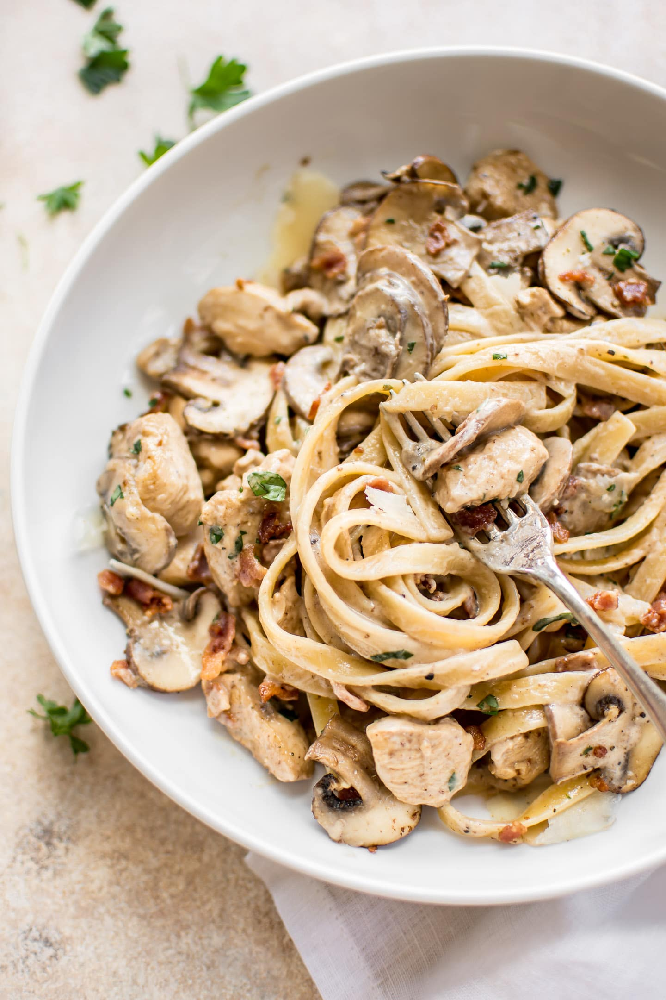

Creamy Chicken and Mushroom Pasta

Image by Salt and Lavender
Description
This easy creamy balsamic chicken bacon mushroom pasta is loaded with flavor! A simple weeknight dinner that the whole family will love. Ready in only 30 minutes!
Ingredients
- Fresh Mushrooms
- Chicken
- Dry white wine
- Cream
- Fresh herbs
- Parmesan cheese
- Lemon
Steps
- Heat olive oil in a large skillet over a medium-high heat. Cook the chicken thighs for 5 - 7 minutes each side until golden brown and cooked through. Set aside.
- Lower to a medium heat, add the butter then toast the mushrooms for 5 - 7 minutes turning only once.
- Add the garlic and rosemary, toss and cook for one minute. Add the wine and let it gently reduce for 2-3 minutes.
- Add the cream and mix through.
- Push the mushrooms to the side and add the grated parmesan in two separate lots, whisking in and letting it melt into the cream. Add the lemon juice and black pepper and whisk in quickly.
- Add the cooked pasta, the chicken and let it gently bubble away for a min or two to thicken. Add the chopped parsley right before serving.
Home